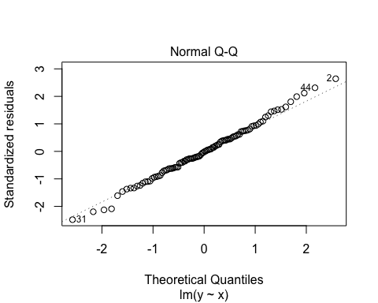
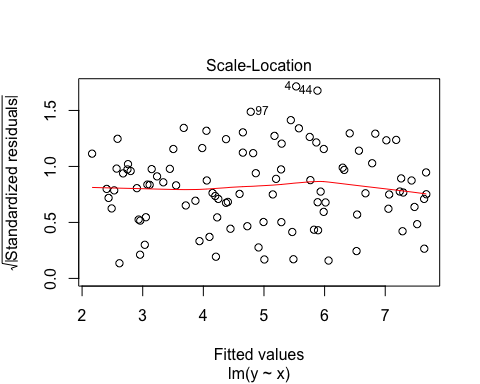
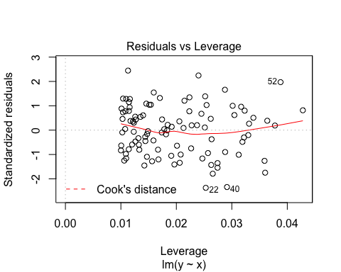
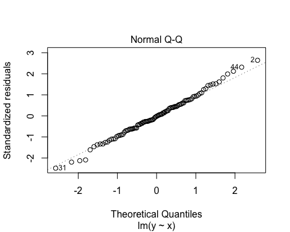
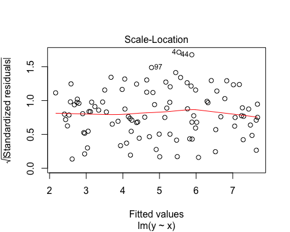
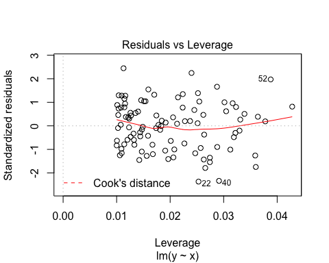
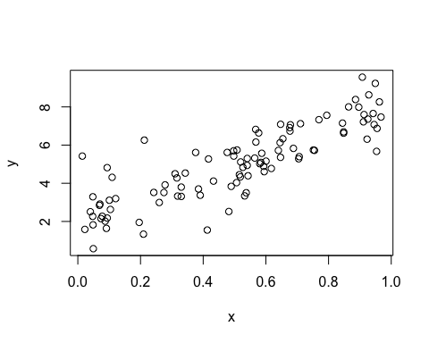
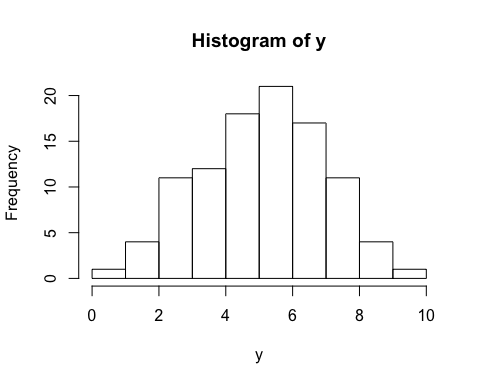
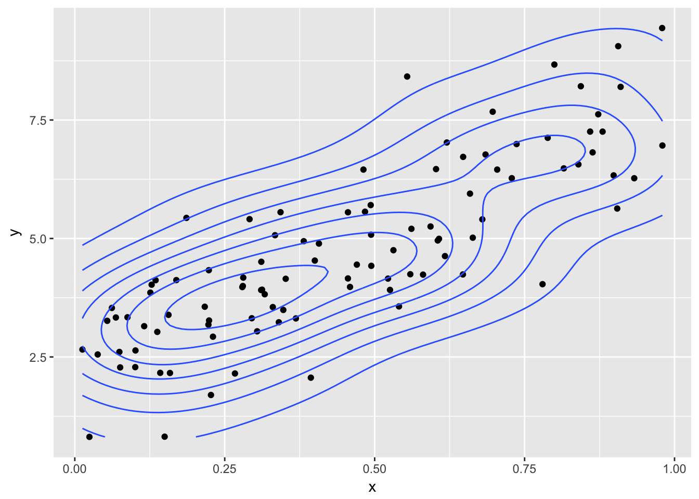
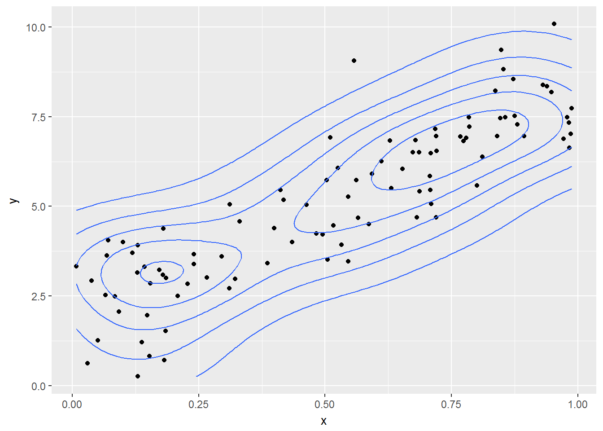

1 Introduction
1.1 Preface
1.2 Where to get R
1.3 Structure of the book
2 Why bother?
2.1 Why do we need all this?
2.2 Why use R and not other applications?
2.3 R Markdown: a wonderful life in plain text
2.4 Regression analysis: not again!
3 Basic R Usage
library("swirl")
library("rio")
library("ggplot2")
library("dplyr")The R programming language and software environment for statistical computing is an implementation of the proprietary S programming language by Ross Ithaka and Robert Gentleman in 1992. It quickly gained in popularity (see, e.g, this Nature article from 2014 Programming tools: Adventures with R) and now has more than official 10,000 user contributed packages (see as well the blog piece On the growth of CRAN packages).
3.1 For absolute beginners
At the moment there are many tutorials, blogs, youtube clips, and background materials about using R on the internet. I therefore do not intend to write a complete handbook, but focus instead on what I need for my courses. Moreover, I do not intend to teach the very basic stuff. There are very good online (and offline) tutorials out there. The RStudio https://www.rstudio.com/online-learning/#R] gives a good overview of all the options.
One tutorial I particularly enjoyed is the quick and free code school tutorial from O’Reilly (to be found here: http://tryr.codeschool.com/. Another option would be to take the introduction course from DataCamp https://www.datacamp.com/courses/free-introduction-to-r. Note that although both tutorials are free, subsequent tutorials are not. But for our purpose we only need the free introductions.
For slightly more extensive material, there is a very good tutorial package out there called Swirl (see as well the website: http://swirlstats.com/students.html). I very much recommend using this package for absolute beginners. The way to do this is rather simple. First install the package by typing:
install.packages("swirl")then start Swirl by first loading the package:
library("swirl")And then call the function by typing:
swirl()In the first menu choose R Programming. Now, there are 15 lessons. I find the first four the most useful (Basic Building Block, Workspace and Files, Sequences of Numbers, Vectors), but others are very useful as well to go through. The command main() by the way brings you always back to the main menu, and do not go for the credits on coursera (that is now a paid online course).
3.2 How to use it
R is truly a programming language in the sense that there is no graphical user interface (GUI) involved. You need to type your own commands. And for beginners this sort of sucks. It seems slower, you have no idea which command to type in, and you frequently make many mistakes. However, when you start to use it more, the speed of getting things done goes up (sometimes exponentially), you have a better grasp on the basic commands, and the number of mistakes go down. And perhaps you even reach that wonderful sensation: you feel in control of things.
In contrast with programs such as Excel or SPSS, there are two big differences: (i) you use scripts and (ii) you make frequently use of packages which are essentially written by other R users.
3.2.1 Scripts
The use of scripts or program files is somewhat alien to most. Although programs such as Stata also makes use of scripts in the form of so-called do files. You start a new script by clicking on File > New Script (R editor) or File > New File > New Script (RStudio). You now have a new empty file (which you have to save from time to time). If you fill in this file with commands, you are actually programming. The huge benefit of this procedure is that you record what you have done and that you can easily change something without retyping the whole thing over again.
As an example, assume that somebody gives you a dataset with 2 variables and ask you to analyse this dataset. With SPSS you read this dataset in and then click on various butttons so you get some output. Now, assume further that this person actually has forgotten a variable (this happens more often than you think) and gives you a new dataset with 3 variables. Then you have to do all the clicking again (and hopefully you remembered on which buttons you actually clicked).
When you have a script file you only have to change the code in 1 or 2 places and run it all again. No sweat! So, writing up all the commmands and saving it for later, might cost you some time in the beginning, but there are huge time savers later on! To run a script you simply need to press the button Edit > Run all (R editor) or Code > Run Region > Run All (RStudio). Nobody does that however, because there are numerous Keyboard Shortcuts (I advise you to learn them, because they make you considerably faster. Actually, most Keyboard Shortcuts work in a wide variety of editors–even in Word.)
3.2.2 Help!
Sometimes you have found a command you would think you could use, but you do not know how, then you need to use the help() command, where the thing you want help on should go between parentheses. A shortcut for this would be to use the ? operator in front of the command. For instance, you know that the command sqrt could be useful to find square roots, but how? Then type:
help(sqrt)
?sqrtAnd the appropiate documentation will pop up. Not that the documentation will make sense immediately, but a very efficient way to understand what is going on is to look for the examples at the bottom of the documentation and copy and play with them. In fact, you can immediately run an example by using the example command, as follows
example(sqrt)3.2.3 Packages
R (as many other software programs/languages nowadays) depends heavily on packages written by other parties, usually users of R. There are now many packages out there. You can find the ‘official’ ones on the CRAN website, but there are many more. Packages have to be installed (both R editor and RStudio have a separate package manager) and afterwards loaded. Say, for instance we want to use the awesome ggplot2 package (a package to make plots look nice, actually to make more elaborate plots but anyway), then to install and load the package we give the commands:
install.packages("ggplot2")
library("ggplot2")Now, we can use the commands from this package as if they were built-in.
Gradually, we come across some useful packages. Those we will use in a chapter will always be listed at the start of the chapter.
3.2.4 Using comments
A final word in this section about the use of comments. Do it!. Really, it will make your future life much easier if you have documented what you have done. You can insert comments by using the # operator (everything after the hashtag is a comment), so, e.g.,
2+2 # always wanted to know about the outcome, but were afraid to ask3.3 Reading and writing data
To properly do statistics one needs data (duh!). Luckily, there are numerous ways to get data in R.
When you just have a csv text file (comma separated file), it is easy, you just type:
df <- read.csv(file="my_data.csv", header = TRUE)and you read in the data.csv in a data frame variable called df. Note that the original header variables are preserved. If you would like to store your data you can do the reverse, namely:
write.csv(df, file = "my_data.csv")Now sometimes you do not have nicely formatted .csv or .txtfiles, but nasty .dta files from Stata or .xlsx files from Excel. Here the package Rio comes very handed, being the swiss-army knife of data converters in R. Assume you have the mtcars dataset in various formats, then you can do
library("rio")
x <- import("mtcars.sav") # SPSS data file
y <- import("mtcars.xlsx") # Excel data file
z <- import("mtcars.dta") # Stata data fileand all dataframes x, y z should be identical.
3.4 Ehmmm, dataframes
I already mentioned dataframes above, but have not yet explained what they are. Simply, it is your data. Lets construct a simple dataframe:
Names <- c("Thomas", "Erik", "Mark", "Eveline")
Grades <- c(5, 8, 6.5, 7)
Female <- c(FALSE,FALSE,FALSE,TRUE)
df_grades <- data.frame(Names, Grades, Female) First,note a couple of things. A dataframe can consists of various data_types, in this case strings (the names)—so variable names are always in strings—, numbers (the grades) and so-called Booleans (someone is female or not). Secondly, we have named the variables. So, we now have a dataframe called df_grades. Great, now what? Well, we can do a couple of things. By using the command head() we can show the first 6 rows of this dataframe.
head(df_grades)## Names Grades Female
## 1 Thomas 5.0 FALSE
## 2 Erik 8.0 FALSE
## 3 Mark 6.5 FALSE
## 4 Eveline 7.0 TRUEBecause we only have four observations this actually gives our whole dataframe (you can also just type df_grades to get this). Using square brackets [] allows you get specific information from this dataset, where the first index denotes the row and the second index denotes the column. Look at the following examples:
df_grades[1,2]## [1] 5df_grades[1,]## Names Grades Female
## 1 Thomas 5 FALSEdf_grades[3]## Female
## 1 FALSE
## 2 FALSE
## 3 FALSE
## 4 TRUEdf_grades["Names"]## Names
## 1 Thomas
## 2 Erik
## 3 Mark
## 4 EvelineMost of the statistical stuff we will do invokes the use of dataframe and specific variables from that dataframe.
How to change variables or generate new variables in such a dataframe. Well, note that you can always access elements from an object by the $-sign. So, let’s suppose we want to add a new variable to our dataframe where we add a whole point to the Grades variable. We can do this as follows:
df_grades$Grades_revised <- df_grades$Grades + 1Now, the grades dataframe looks like:
head(df_grades)## Names Grades Female Grades_revised
## 1 Thomas 5.0 FALSE 6.0
## 2 Erik 8.0 FALSE 9.0
## 3 Mark 6.5 FALSE 7.5
## 4 Eveline 7.0 TRUE 8.0We can even do this in a more simple way, by invoking the most brilliant dplyr package. Say, we want to create a log variable of the “Grades” variable and then a new variable where we add +1. No idea why, but we want it. Then
df_grades <- mutate(df_grades,
log_grades = log(Grades),
log_grades_revised = log_grades + 1)This does oes the trick. Note that I only have to invoke mutate once. dplyr can be used for filtering, selecting, reshaping, sorting and a whole lot of other stuff. A very handy cheatsheet can be found here.
Now, the grades dataframe looks like:
head(df_grades)## Names Grades Female Grades_revised log_grades log_grades_revised
## 1 Thomas 5.0 FALSE 6.0 1.609438 2.609438
## 2 Erik 8.0 FALSE 9.0 2.079442 3.079442
## 3 Mark 6.5 FALSE 7.5 1.871802 2.871802
## 4 Eveline 7.0 TRUE 8.0 1.945910 2.9459103.5 Functions
I already referred to the concepts of functions above. Everything in R that has the symbols () just behind a word denotes a function. And most things in R are really a function. Examples you have already seen above are sqrt(), head(), and read.csv(). As a user, you can define your own functions. (But always do this before you ‘call’ this function.) Suppose, we want to create a function that calculates the function \(z = x^2 + y^2 + 10*x + 12* y - 10\) for every \(x\) and \(y\) we would like to use. For instance, we can first define the function (let’s call the function ‘zvalue’):
zvalue <- function(x,y){
return(x^2 + y^2 + 10*x + 12* y - 10)
}Note that the return() is not necessary, as long as it is the last statement that you make.
And we invoke the function for \(x=2\) and \(y=2\), or for \(x=2\) and \(y=3\), or even for \(x=42\) and \(y=42\),as follows:
zvalue(2,2)## [1] 42zvalue(2,3) # Why not, why not## [1] 59zvalue(42,42) # The answer to everying squared!## [1] 4442In fact, we now see as well why functions are so useful. We can invoke them multiple times with different parameters.
3.6 Regression modeling
Before we start laying-out how to do regression modeling in R, we first need data. And for this purpose we will simulate our data by the following commands:
x <- runif(100, min = 0, max = 1) # create 100 uniformly distributed numbers in interval (0,1)
y <- 2 + 6*x + rnorm(100, mean = 0, sd = 1) # rnorm stands for the normal distribution
df <- data.frame(y,x) # Strictly not necessary but for the sake of the expositionSo in fact we have now created the following model:
\[ y_i = 2 + 6 x_i + \epsilon_i, \] where \(\epsilon_i\) is standard normally distributed (as I will explain later in Section @ref(sec:theory) this is for convenience but not absolutely needed to do linear regression).
checking this with
head(df)## y x
## 1 6.251614 0.6115453
## 2 6.509932 0.6859911
## 3 4.379176 0.1807464
## 4 6.820529 0.7738282
## 5 6.381115 0.8108168
## 6 3.600415 0.2960357indeed shows the first 6 combination of \(x\) and \(y\). If we now perform a linear regression, then we expect that the estimated intercept should be very close to 2 and the estimated slope parameter should be very close to 6. In R we have the command lm() (from linear model) to do this as follows:
linear_model <- lm(y~x, data = df)We now have performed a regression of \(y\) onto \(x\), using the data df and save the result in a variable called linear_model. First look at the first part of the lm(,) expression. y~x means that y is the left-hand side variable and x the righ-hand side variable (if we have more variables, the formula becomes something asy~x+u+v+w+z). The second part of the lm(,) expression denotes the specific dataframe to be used. Namely, in R you can have multiple dataframes so you have to specify which one is to be used.
Right, but now what? Well, we have now a variable called linear_model, just typing in linear_model only gets you the real basic results:
linear_model##
## Call:
## lm(formula = y ~ x, data = df)
##
## Coefficients:
## (Intercept) x
## 1.798 6.403But, you want more, right? Standard errors, t-statistics, R-squares, the whole lot. For this, you need the summary() command, which gives you the following outcome
summary(linear_model)##
## Call:
## lm(formula = y ~ x, data = df)
##
## Residuals:
## Min 1Q Median 3Q Max
## -2.3668 -0.7524 0.0943 0.6321 3.6974
##
## Coefficients:
## Estimate Std. Error t value Pr(>|t|)
## (Intercept) 1.7977 0.2119 8.483 2.34e-13 ***
## x 6.4032 0.3552 18.028 < 2e-16 ***
## ---
## Signif. codes: 0 '***' 0.001 '**' 0.01 '*' 0.05 '.' 0.1 ' ' 1
##
## Residual standard error: 1.062 on 98 degrees of freedom
## Multiple R-squared: 0.7683, Adjusted R-squared: 0.766
## F-statistic: 325 on 1 and 98 DF, p-value: < 2.2e-16Interestingly, our parameters are close to 2 and 6, but not that close (which happens with a limited amount of observations, notice as well the relatively large standard errors). So, the command summary() gives all the needed statistical output, but what about regression diagnostics. For this you can ask for a plot of the variable linear_model
plot(linear_model) 

And that is basically it, at least for the basics. There is much more to say about the lm() command, but that is for later.
3.7 Making plots
Where R truly shines is in making plots, diagrams, histograms, etcetera. The first thing with data you want to do is to make a scatterplot. With our previously defined \(x\) and \(y\) data this can be easily done by:
plot(x,y)
If you would like to create a histogram, just use hist() as
hist(y)
However, to go one step further you also make a plot of a dataframe. for our df dataframe this is not very insightful, but let’s add another variable \(z\) uncorrelated with \(x\) and \(y\) and then plot the dataframe (the $ indicate that z is a variable in dataframe df).
df$z <- runif(100, 0,1)
plot(df)
And luckily, this plot confirms what we expect. \(x\) are correlated \(y\) by construction and \(z\) is not correlated with either \(x\) and \(y\). These are all the so-called baseline plots. They are great (and already highly customizable), but lately there has been a new kid on the block called ggplot2. It goes to far to explain the details of ggplot2 (gg here stands for the grammar of graphics), but suffice to say that ggplot2 works with building blocks, so that every piece of the figure that you want (or can think of) can be constructed. Just as an example, let’s redo our scatterplot but now using ggplot2 and say we want to add some density lines from our observations (just because we can). This can be done in the following way
ggplot(df, aes(x,y))+geom_point() + geom_density2d()
3.8 Recap
For the absolute beginner R is huge and daunting. You need to learn by taking small steps and by practicing (a lot). Do not aim immediately at big and complex projects but start small and at the basics. You will then learn that you quickly make progress and at a certain time even become efficienter than when using mouse driven tools (clicking) as Excel or SPSS. In later chapters I dive in to some more detailed topics, and hopefully the material provides you with a background solid enough to understand and work with those topics using R.